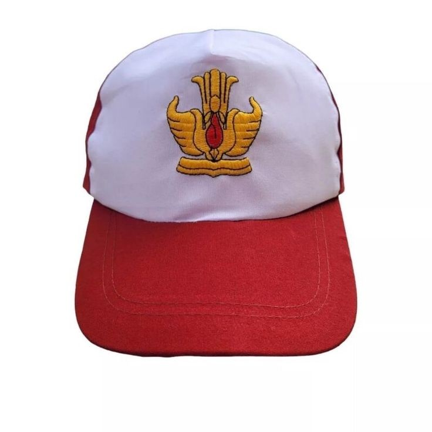
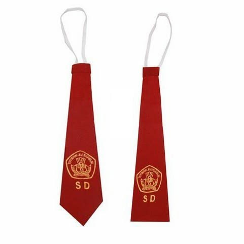
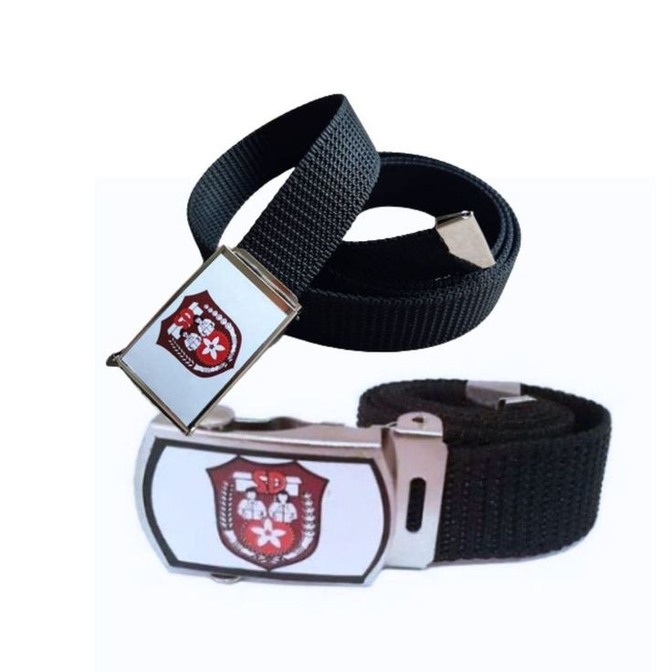
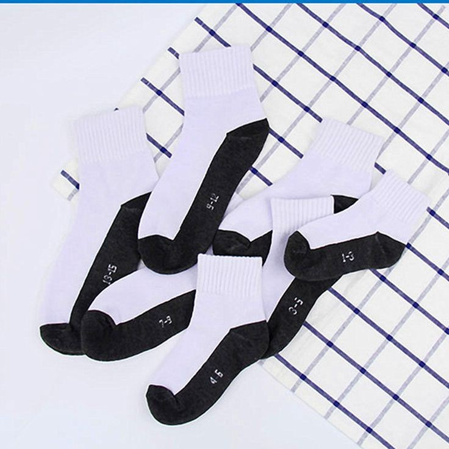
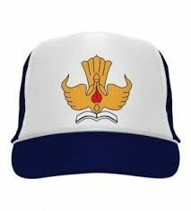
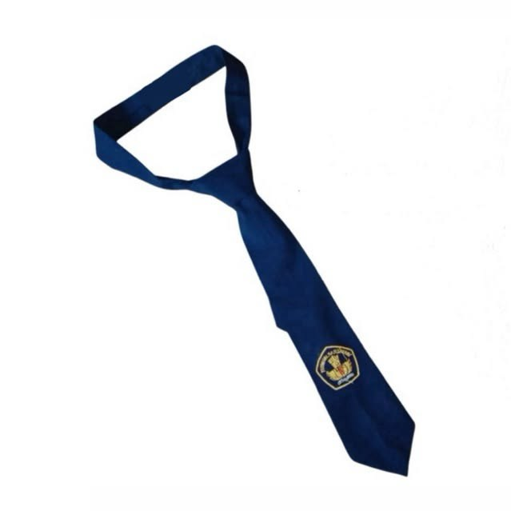
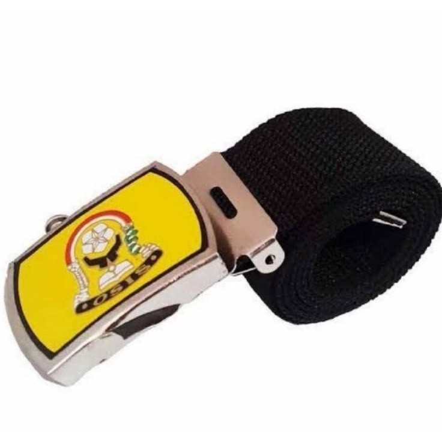
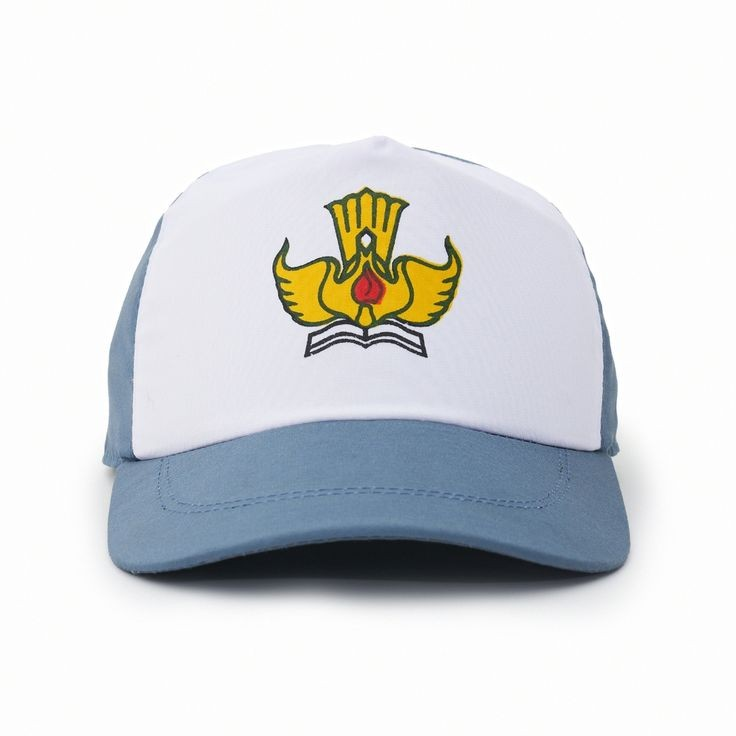
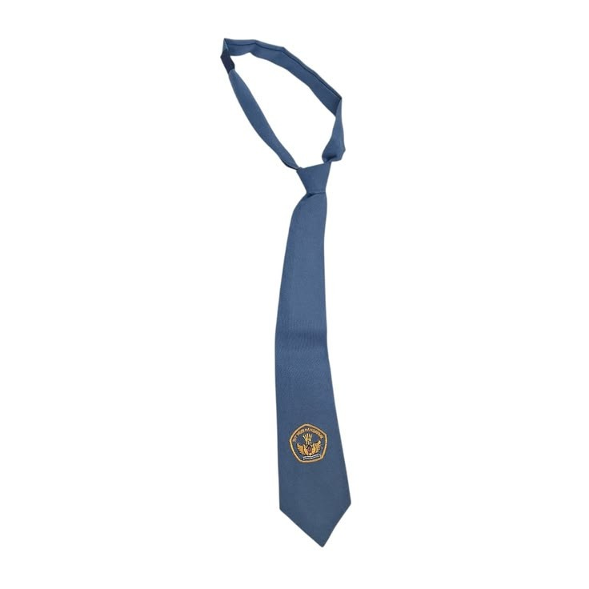
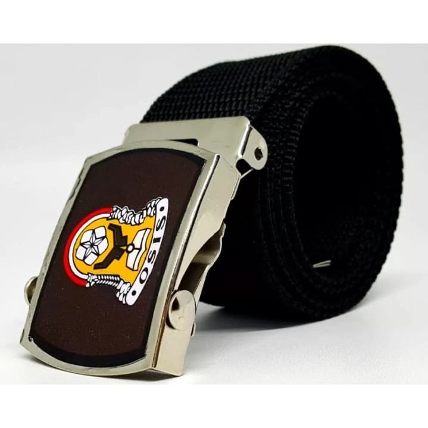

SD
Topi Sekolah SD
Topi sebagai salah satu pelengkap seragam sekolah dasar.
SCHOOL ACCESSORIES

Topi sebagai salah satu pelengkap seragam sekolah dasar.

Dasi sekolah dasar dengan warna sesuai aturan sekolah.

Aksesori yang membantu membuat tampilan seragam lebih rapi.

Pelengkap seragam yang membantu menjaga kenyamanan kaki.

Topi dengan lambang sesuai jenjang SMP.

Desain dasi rapi yang melengkapi tampilan seragam SMP.

Gesper dengan lambang jenjang SMP untuk kelengkapan seragam.

Model topi untuk pelajar tingkat SMA dan SMK.

Pilihan dasi untuk pelajar SMA dan SMK.

Pilihan model gesper untuk pelajar SMA dan SMK.